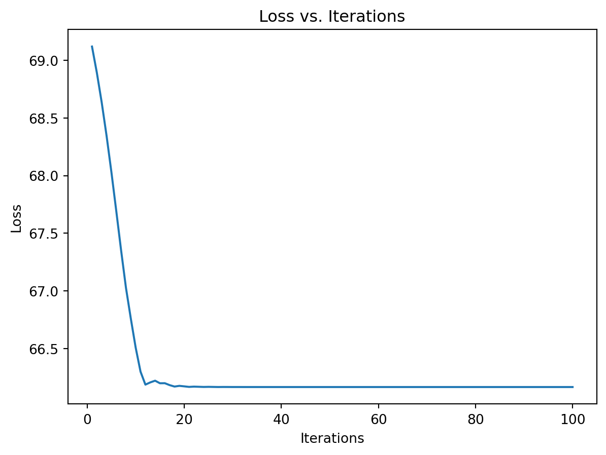
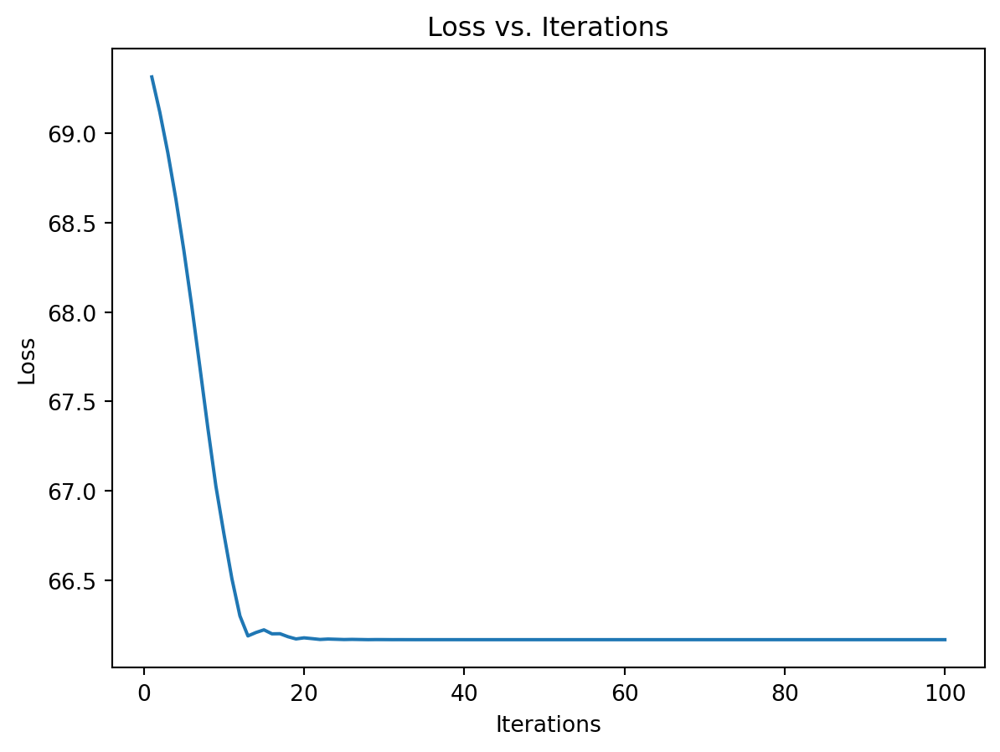
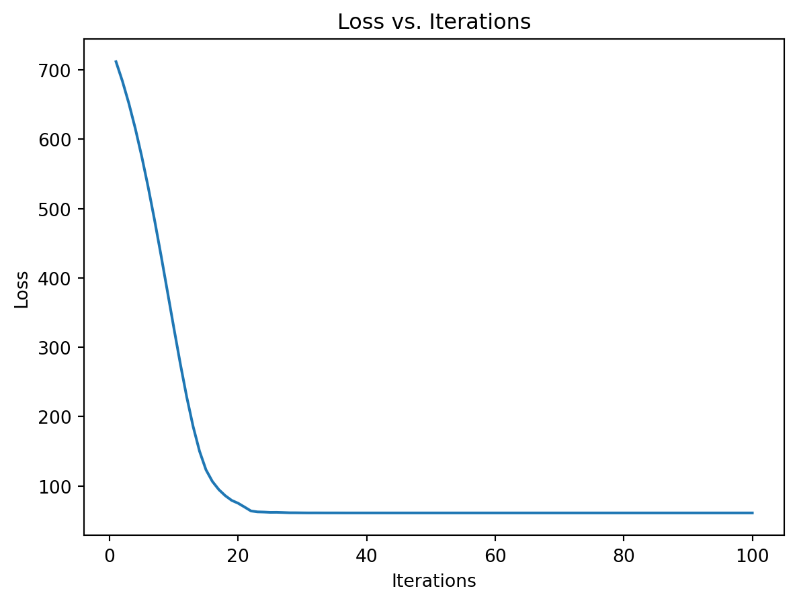
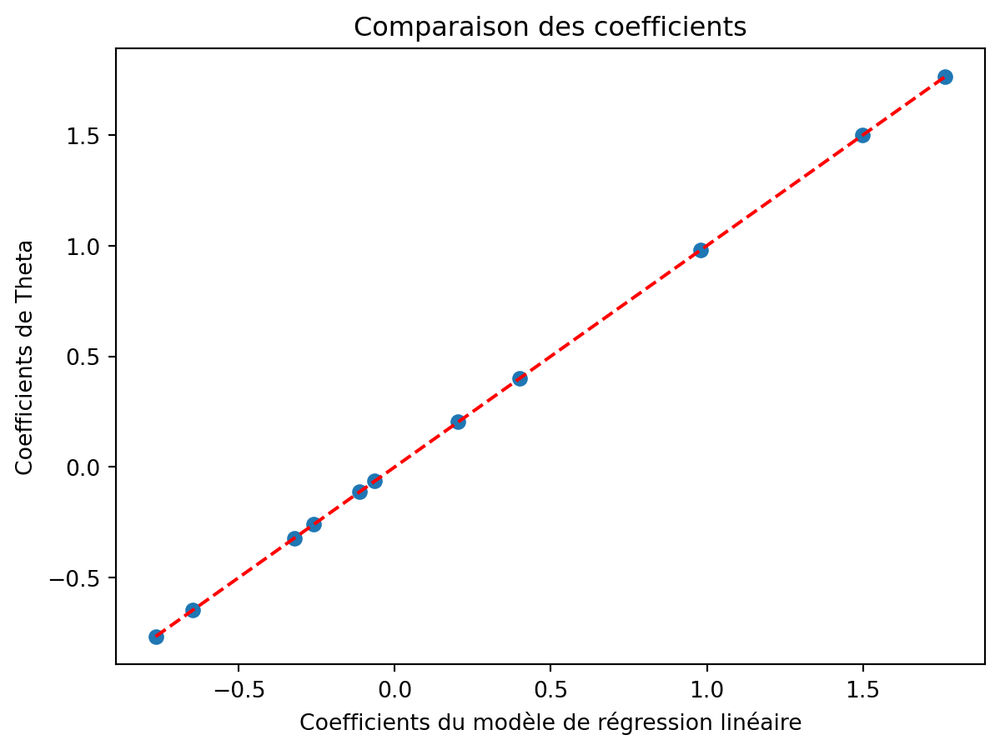

import torch
import torch.distributions as dist
import torch.optim as optim
import matplotlib.pyplot as plt
import pandas as pd
import numpy as np
from sklearn.linear_model import LogisticRegression
from sklearn.linear_model import LinearRegressionIntroduction à Pytorch
Traduction de la version {torch} en pytorch
Cette page constitue une traduction en Python avec pytorch de la page équivalente produite avec {torch} lors de FinistR 2022.
Installation
Une façon (parmi d’autres) d’avoir une installation fonctionnelle de torch consiste à l’installer via conda. La page officielle est très bien documentée et fournit toutes les instructions nécessaires. La solution adoptée ici consiste à créer un environnement conda (nommé torch) pour y installer torch (en version CPU).
#| eval: false
conda create -n torch
conda install pytorch torchvision torchaudio cpuonly -c pytorch
conda install pandas matplotlib scikit-learn jupyterIl suffit alors d’activer l’environnement torch pour produire le html à partir du qmd
#| eval: false
conda activate torch
quarto render my_document.qmd --to htmlExploration de {torch} pour la différentiation automatique
Principe du calcul de gradient
{torch} fonctionne avec ses propres types numériques, qu’il faut créer avec la fonction torch.tensor() et ses propres fonctions torch.*(). Considérons un exemple très simple: \(x \mapsto x^2\)
x = torch.tensor(3)
y = torch.square(x)ytensor(9)On va pouvoir calculer \(\frac{dy}{dx}\) en définissant x avec l’argument require_grad = True. Cet argument va spécifier que ‘x’ est entrainable et va démarrer l’enregistrement par autograd des opérations sur ce tenseur.
Autograd est un module de torch qui permet de collecter les gradients. Il le fait en enregistrant des données (tenseurs) et toutes les opérations exécutées dans un graphe acyclique dirigé dont les feuilles sont les tenseurs d’entrée et les racines les tenseurs de sorties. Ces opérations sont stockées comme des fonctions et au moment du calcul des gradients, sont appliquées depuis le noeud de sortie en ‘backpropagation’ le long du réseau.
Attention, torch ne peut stocker un gradient que pour des valeurs numériques (float), pas pour des entiers.
x = torch.tensor(2.0, requires_grad = True)
xtensor(2., requires_grad=True)On remarque que x possède désormais un champ grad (même si ce dernier n’est pas encore défini).
x.gradLorsqu’on calcule \(y = x^2\), ce dernier va également hériter d’un nouveau champ $grad_fn:
y = torch.log(torch.square(x))
y
y.grad_fn<LogBackward0 at 0x7f67d42453f0>qui indique comment calculer le gradient en utilisant la dérivée des fonctions composées:
\[ (g\circ f)'(x) = f'(x) \times g'(f(x)) \]
et les fonctions
\[ \frac{dx^2}{dx} = 2x \quad \frac{d \log(x)}{dx} = \frac{1}{x} \]
Le calcul effectif du gradient est déclenché lors de l’appel à la méthode .backward() de y et est stocké dans le champ .grad de x.
x.grad ## gradient non défini
y.backward()
x.grad ## gradient défini = 1tensor(1.)On a bien:
\[ \frac{dy}{dx} = \underbrace{\frac{dy}{dz}}_{\log}(z) \times \underbrace{\frac{dz}{dx}}_{\text{power}}(x) = \frac{1}{4} \times 2*2 = 1 \]
Intuitivement au moment du calcul de y, torch construit un graphe computationnel qui lui permet d’évaluer numériquement \(y\) et qui va également servir pour calculer \(\frac{dy}{dz}\) au moment de l’appel à la fonction .backward() issue du module autograd.
Essayons de reproduire le calcul dans notre exemple. Le calcul forward donne
\[ x = 2 \xrightarrow{x \mapsto x^2} z = 4 \mapsto \xrightarrow{x \mapsto \log(x)} y = \log(4) \]
Pour le calcul backward, il faut donc construire le graphe formel suivant. La première étape du graphe est accessible via $grad_fn
y.grad_fn<LogBackward0 at 0x7f67d42453f0>et les fonctions suivantes via $next_functions
y.grad_fn.next_functions((<PowBackward0 at 0x7f67d42461d0>, 0),)Dans notre exemple, on a donc:
\[ \frac{dy}{dy} = 1 \xrightarrow{x \mapsto \text{logBackward}(x)} \frac{dy}{dz} = \frac{dy}{dy} \times \text{logBackward}(z) \xrightarrow{x \mapsto \text{powerBackward}(x)} \frac{dy}{dx} = \frac{dy}{dz} \times \text{logBackward}(x) \]
Dans cet exemple:
- \(\text{logBackward}(x) = \frac{1}{x}\)
- \(\text{powBackward}(x) = 2x\)
Et la propagation des dérivées donne donc
\[ \frac{dy}{dy} = 1 \to \frac{dy}{dz} = 1 \times \frac{1}{4} = \frac{1}{4} \to \frac{dy}{dx} = \frac{1}{4} \times 4 = 1 \]
Ce graphe est illustré ci-dessous pour la fonction \((x_1, x_2) \mapsto z = sin(x_2) log(x_1 x_2)\)

Pour (beaucoup) plus de détails sur le graphe computationnel, on peut consulter la documentation officielle de PyTorch.
Il faut juste noter que dans torch, le graphe computationnel est construit de façon dynamique, au moment du calcul de y.
Régression logistique avec torch
On va adopter un simple modèle de régression logistique:
\[ Y_i \sim \mathcal{B}(\sigma(\theta^T x_i)) \quad \text{avec} \quad \sigma(x) = \frac{1}{1 + e^{x}} \]
Le but est d’estimer \(\theta\) et éventuellement les erreurs associées. On commence par générer des données.
# Générer les paramètres
torch.manual_seed(45)
n = 100
p = 3
# Générer la matrice X
X = torch.randn(n, p)
# Générer le vecteur theta
theta = torch.randn(3)
# Calculer les probabilités
probs = 1 / (1 + torch.exp(torch.mv(X, theta)))
# Générer les observations Y en utilisant une distribution Bernoulli
bernoulli_dist = dist.Bernoulli(probs=probs)
Y = bernoulli_dist.sample()torch fonctionne avec ses propres types numériques, qu’il faut créer avec la fonction torch.tensor(). C’est ce qu’on a fait avec les fonctions torch.randn() et bernoulli_dist.sample() mais on pourrait forcer la conversion avec torch.tensor().
x = X.clone()
y = Y.clone()On écrit ensuite la fonction de vraisemblance
\[ \mathcal{L}(\mathbf{X}, \mathbf{y}; \theta) = \sum_{i=1}^n y_i (\theta^Tx_i) - \sum_{i=1}^n log(1 + e^{\theta^T x_i}) \]
def logistic_loss(theta, x, y):
odds = torch.mv(x, theta)
log_lik = torch.dot(y, odds) - torch.sum(torch.log(1 + torch.exp(odds)))
return -log_likavant de vérifier qu’elle fonctionne:
logistic_loss(theta = theta, x = x, y = y)tensor(80.1576)On veut ensuite définir une fonction objective à maximiser (qui ne dépend que de theta):
def eval_loss(theta, verbose=True):
loss = logistic_loss(theta, x, y)
if verbose:
print("Theta:", theta, ": Loss:", float(loss))
return losset vérifier qu’elle fonctionne
eval_loss(theta, verbose = True)Theta: tensor([-0.2633, -0.2123, 0.5694]) : Loss: 80.15764617919922tensor(80.1576)avant de procéder à l’optimisation à proprement parler. Pour cette dernière, on commence par définir notre paramètre sous forme d’un tenseur qui va être mis à jour
theta_current = torch.zeros(len(theta), requires_grad=True)et d’un optimiseur:
optimizer = optim.Rprop([theta_current])On considère ici l’optimiseur Rprop (resilient backpropagation) qui ne prend pas en compte l’amplitude du gradient mais uniquement le signe de ses coordonnées (voir ici pour une introduction pédagogique à Rprop).
Intuitivement, l’optimiseur a juste besoin de la valeur de \(\theta\) et de son gradient pour le mettre à jour. Mais à ce stade on ne connaît pas encore le gradient \(\nabla_\theta \mathcal{L}(\mathbf{X}, \mathbf{y}; \theta)\)
theta_current.gradet il faut donc le calculer:
loss = eval_loss(theta_current, verbose = False)
loss.backward()On peut vérifier que le gradient est stocké dans theta
theta_current.gradtensor([-5.4452, -9.6232, 5.0331])et effectuer la mise à jour avec une étape d’optimisation
optimizer.step()On peut vérifier que le paramètre courant a été mis à jour.
theta_currenttensor([ 0.0100, 0.0100, -0.0100], requires_grad=True)Il ne reste plus qu’à recommencer pour un nombre d’itérations donné. Attention, il faut réinitialiser le gradient avant de le mettre à jour, le comportement par défaut de mise à jour étant l’accumulation plutôt que le remplacement.
num_iterations = 100
loss_vector = []
for i in range(num_iterations):
optimizer.zero_grad()
loss = eval_loss(theta_current, verbose=False)
loss.backward()
optimizer.step()
loss_vector.append(loss.item())On vérifie que la perte diminue au cours du temps.
plt.plot(range(1, num_iterations + 1), loss_vector)
plt.xlabel('Iterations')
plt.ylabel('Loss')
plt.title('Loss vs. Iterations')
plt.show()
On constate que notre optimiseur aboutit à peu près au même résultat que glm()
# Ajustement du modèle GLM
model = LogisticRegression(fit_intercept=False, penalty = None)
model.fit(X, Y)
sklearn_coeffs = model.coef_.tolist()[0]
# Comparer les valeurs obtenues avec torch et glm
df = pd.DataFrame({
'torch': theta_current.detach().numpy().tolist(),
'sklearn': sklearn_coeffs
})
print(df) torch sklearn
0 0.125890 0.125891
1 0.423915 0.423912
2 -0.341099 -0.341100Attention la mécanique présentée ci-dessus avec .step() ne fonctionne pas pour certaines routines d’optimisation (BFGS, gradient conjugué) qui nécessite de calculer plusieurs fois la fonction objective. Dans ce cas, il faut définir une closure, qui renvoie la fonction objective, et la passer en argument à .step().
%%time
# Remise à zéro du paramètre courant
theta_current = torch.zeros(len(theta), requires_grad=True)
optimizer = optim.Rprop([theta_current], lr=0.01)
# Définition de la closure
def calc_loss():
optimizer.zero_grad()
loss = eval_loss(theta_current, verbose=False)
loss.backward()
return loss
# Optimisation avec la closure
num_iterations = 100
loss_vector = []
for i in range(num_iterations):
loss = optimizer.step(calc_loss).item()
loss_vector.append(loss)CPU times: user 38.5 ms, sys: 0 ns, total: 38.5 ms
Wall time: 38.3 msOn peut vérifier qu’on obtient des résultats identiques dans les deux cas d’utilisation:
theta_currenttensor([ 0.1259, 0.4239, -0.3411], requires_grad=True)plt.plot(range(1, num_iterations + 1), loss_vector)
plt.xlabel('Iterations')
plt.ylabel('Loss')
plt.title('Loss vs. Iterations')
plt.show()
Exemple de régression multivariée
On considère un exemple de régression multiple, réalisé à partir du blog torch for optimization, où l’on cherche à estimer les paramètres de moyenne ainsi que la variance par maximisation de la vraisemblance.
On génère les données
# Définir la graine aléatoire pour la reproductibilité
torch.manual_seed(45)
# Générer la matrice X
n = 100
X = torch.cat((torch.ones(n, 1), torch.randn(n, 10)), dim=1)
# Générer le vecteur Beta.true
Beta_true = torch.randn(11)
# Générer la variable dépendante Y
Y = torch.matmul(X, Beta_true) + torch.randn(n)La fonction de perte à optimiser (ici la log-vraisemblance) va dépendre d’inputs définis comme des “tenseurs torch”:
## Declare the parameter for the loss function
## 11 parameters for Beta, 1 for sigma
Theta = torch.ones(12, requires_grad = True)Quelques remarques :
le paramètre \(\theta\) à optimiser est ici défini comme un tenseur, i.e. un objet qui va notamment stocker la valeur courante de \(\theta\). Avec l’option
requires_grad=Truela valeur courante du gradient de la dernière fonction appelée dépendant de \(\theta\) va aussi être stockée.la matrice \(X\) est aussi définie comme un tenseur, mais l’option “requires_grad=TRUE” n’a pas été spécifiée, le gradient ne sera donc pas stocké pour cet objet. Cette distinction est explicitée lorsque l’on affiche les deux objets:
Theta[:3]
X[:3, :3]tensor([[ 1.0000, 0.1371, 1.5252],
[ 1.0000, 0.3665, 1.2984],
[ 1.0000, -0.1322, 0.0068]])La fonction de perte est ici la log-vraisemblance, elle-même définie à partir d’opérateurs torch élémentaires :
def LogLik():
n = X.shape[0]
# Last term of Theta is the std
sigma = Theta[11]
log_sigma = torch.log(sigma)
squared_residuals = torch.norm(Y - torch.matmul(X, Theta[:11])) ** 2
term1 = n * log_sigma
term2 = squared_residuals / (2 * (sigma ** 2))
return term1 + term2La fonction LogLik peut être appliquée comme une fonction R qui prendra directement en argument les valeurs courantes de X.tensor et \(\theta\), et produira en sortie un tenseur
LogLik()tensor(736.3355, grad_fn=<AddBackward0>)Outre la valeur courante de la fonction, ce tenseur contient la “recette” du graphe computationnel utilisé dans calcul backward du gradient de la fonction LogLik par rapport à \(\theta\). On peut ainsi afficher la dernière opération de ce graphe
toto = LogLik()
toto.grad_fn<AddBackward0 at 0x7f66fba82e00>correspondant à l’addition (AddBackward) des deux termes \[ n\times \log(\theta[11]) \quad \text{et} \quad ||Y-X\theta[0:10]||^2/(2*\theta[11]^2)\] dans le calcul de la perte. On peut afficher les opérations suivantes dans le graphe comme suit:
toto.grad_fn.next_functions((<MulBackward0 at 0x7f66fba82b00>, 0), (<DivBackward0 at 0x7f66fba83370>, 0))L’étape suivante consiste à choisir la méthode d’optimisation à appliquer. L’intérêt d’utiliser le package {torch} est d’avoir accès à une large gamme de méthodes d’optimisation, on considère ici la méthode rprop qui réalise une descente de gradient à pas adaptatif et spécifique à chaque coordonnée:
## Specify the optimization parameters
lr = 0.01
optimizer = optim.Rprop([Theta],lr)On décrit maintenant un pas de calcul du gradient, contenant les étapes suivantes : - réinitialisation du gradient de \(\theta\),
- évaluation de la fonction de perte (avec la valeur courante de \(\theta\)),
- calcul backward du gradient. On inclut tout cela dans une fonction:
## Optimization step description
def calc_loss():
optimizer.zero_grad()
value = LogLik()
value.backward()
return valueCommençons par regarder ce que fait concrètement cette fonction. L’état courant du paramètre est le suivant:
Theta
Theta.gradOn applique une première fois la fonction, et on obtient la mise à jour suivante :
calc_loss()
Theta
Theta.gradtensor([ -73.6607, 133.4165, -100.1567, 134.5971, 38.0697, 123.4896,
49.8657, 82.5681, -27.1204, 185.5123, 176.2979, -1372.6710])Comme on le voit la valeur courante du paramètre n’a pas changée, en revanche Theta.grad contient maintenant le gradient de la fonction de perte calculé en \(\theta\). Dans le cas où la méthode d’optimisation considérée n’a besoin que de la valeur courante du gradient et du paramètre, on peut directement faire la mise à jour de \(\theta\) :
optimizer.step()
Theta
Theta.gradtensor([ -73.6607, 133.4165, -100.1567, 134.5971, 38.0697, 123.4896,
49.8657, 82.5681, -27.1204, 185.5123, 176.2979, -1372.6710])Il n’y a plus qu’à itérer !
%%time
## Run the optimization
num_iterations = 100
loss_vector = torch.empty(num_iterations)
for i in range(num_iterations):
loss_vector[i] = calc_loss().item()
optimizer.step()CPU times: user 50.9 ms, sys: 529 µs, total: 51.4 ms
Wall time: 51.4 msOn vérifie que l’optimisation s’est bien passée (ie que l’on a minimisé la fonction de perte)
## How does the loss function behave ?
plt.plot(range(1, num_iterations + 1), loss_vector)
plt.xlabel('Iterations')
plt.ylabel('Loss')
plt.title('Loss vs. Iterations')
plt.show()
## Are the gradients at 0 ?
Theta.grad
tensor([-7.5638e-05, -8.4504e-05, 3.2596e-05, -4.3469e-05, -8.8593e-05,
9.8785e-05, 3.1149e-05, -7.0865e-05, -1.0586e-04, 8.9571e-05,
4.5321e-05, 5.3406e-05])et que le résultat est comparable à la solution classique obtenue par OLS :
# Ajuster un modèle de régression linéaire avec scikit-learn
regressor = LinearRegression(fit_intercept=False)
regressor.fit(X, Y)
# Obtenir les coefficients du modèle
beta_hat = regressor.coef_
# Afficher les coefficients et tracer une ligne y = x
print("Coefficients du modèle de régression linéaire :\n", beta_hat)
print("Coefficients de Theta :\n", Theta[:11].detach().numpy().tolist())
# Tracer la ligne y = x pour la comparaison
plt.scatter(beta_hat, Theta[:11].detach().numpy().tolist())
plt.plot([beta_hat.min(), beta_hat.max()], [beta_hat.min(), beta_hat.max()], color='red', linestyle='--')
plt.xlabel('Coefficients du modèle de régression linéaire')
plt.ylabel('Coefficients de Theta')
plt.title('Comparaison des coefficients')
plt.show()
# Calculer la variance des résidus
residuals = Y - torch.matmul(X, torch.tensor(beta_hat).t())
sigma_squared_lm = np.var(residuals.detach().numpy())
sigma_squared_theta = Theta[11]
print("Variance du modèle de régression linéaire :", sigma_squared_lm)
print("Variance de Theta[12] :", sigma_squared_theta.item())Coefficients du modèle de régression linéaire :
[ 1.7637295 -0.32114246 1.4978632 -0.11171225 0.40113908 -0.06434418
0.2032495 -0.25903088 0.9809813 -0.7663111 -0.6479076 ]
Coefficients de Theta :
[1.763728141784668, -0.3211430013179779, 1.4978625774383545, -0.11171171814203262, 0.40113818645477295, -0.06434360891580582, 0.20324911177158356, -0.2590320408344269, 0.9809804558753967, -0.7663102149963379, -0.6479072570800781]
Variance du modèle de régression linéaire : 1.2505516
Variance de Theta[12] : 1.1182799339294434